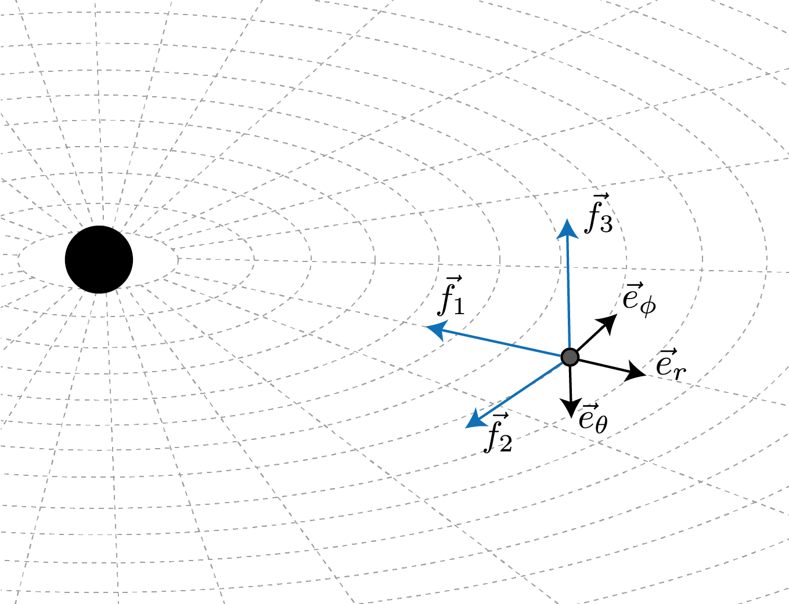

Define a space-time Observer¶
Theoretical background¶
The approach to General Relativity that employs observer frames is known as the tetrad formalism or Cartan formalism. In this framework, it is possible to construct frames (also called vierbein) at each point on the curved manifold, i.e. constructing a frame bundle over the manifold. These frames consist of four orthonormal vectors that we denote as \(\{f^\alpha_a\}\) (greek indices represent the components of the frame vector in the chart coordinates fixed on the manifold while roman indices select one of the frame vector): one time-like vector (\(f^\alpha_0\)) and three space-like vectors (\(f^\alpha_i\)), representing respectively the time axis of a given observer and a series of orthonormal spatial axes, forming a spatial tetrad, at a given point. The observer uses thse axes to define tangent vectors to the manifold and project them in a convenient way in its own frame. In this sense, we can say that the frame \(\{f^\alpha_a\}\) provides a local basis for tangent vectors at the observer’s location.
{kind=link}
{kind=link}
Similarly, one can define a co-frame \(\{f_\beta^b\}\) which forms the basis for tangent 1-forms at the observer’s location.
This can be generalized and one can use the defined frame and co-frame basis to define any tensorial quantity the in the tangent or co-tangent bundle (or any product of these). For example, the metric tensor can be expressed in the coframe as
corresponding to the relations between the local frame metric and the space-time metric
In other terms, in the local observer’s frame the metric is ordinary Minkowski metric, which is a statement of the local flatness in General Relativity.
An example: stationary observers in the Schwarzschild space-time¶
Let’s consider the Schwarzschild space-time already used in this series of tutorials:
We want to fix an observer at a certain point so that the \(f_1\) frame vector points in the radial direction, towards the black hole. The other frame vectors, \(f_2\) and \(f_3\) will point along the angular directions at the observer’s positon, opposite to the coordinate basis vecotor (to ensure the left-handedness of the frame).
{kind=link}
{kind=link}
When these ingredients are put together, and equation (1) is taken into account, one can define a co-frame basis for the Schwarzschild metric (expressed in Schwarzschild coordinates and hance defined in terms of the coordinate basis of the co-tangent space \(\{dt,\,dr,\,d\theta,\,d\phi\}\)) as
From these expressions one can obtain the frame dual \(\{f_\alpha^a\}\) as the inverse of the coframe matrix \(\{f^\beta_b\}\) which will be expressed in the coordinate basis of the tangent space \(\{\partial t,\,\partial r,\,\partial\theta,\,\partial\phi\}\)
As can be seen, the world line of the \(f_0\) vector is a spatially-fixed line, so that the frame identified represents that of a static observers who use rocket engines to “hover” over the massive object.
Observers in PyGRO¶
Let’s now implement the above example in PyGRO, where space-time observers are represented by the abstract class Observer.
In this case, creating a new stationary observer at a distance \(r=50M\) on the equatorial plane of the black hole is as easy as defining:
observer = pygro.Observer(
metric = metric,
x = [0, 50, np.pi/2, 0],
coframe = ["sqrt(1-2*M/r)*dt","-dr/sqrt(1-2*M/r)", "-r*sin(theta)*dphi", "-r*dtheta"]
)
where we have used the expressions of the coframe vectors of the observer’s frame defined above. Read Observer for a detailed documentation of the API functionality.
PyGRO expects to recieve a list of strings for the symbolic definitions of the frame co-vector expressed in the coordinate co-basis, i.e. a linear combination of the differentials d[coordinate] that matches the coordinate names used to define the Metric object (see Define your own space-time).
Alternatively, one can decide to define the observer starting from the frame vectors (instead of co-vectors) expressed in the coordinate basis of the tangent space. In this case PyGRO expects the frame keyword of the Observer be populated by a list of expressions containing the expressions of the frame vectors as a linear combination of the the coordinate basis \(\partial_{\{x\}}\) that in the code must be represented by e[coordinate], again matching the coordinate names used to define the Metric object.
For example, the same observer defined above can be defined as:
observer = pygro.Observer(
metric = metric,
x = [0, 50, np.pi/2, 0],
frame = ["1/sqrt(1-2*M/r)*et","-sqrt(1-2*M/r)*er", "-1/(r*sin(theta))*ephi", "-1/r*etheta"]
)
Note
The symbolic expressions of both the frame and co-frame vectors can make use of auxiliary expressions and auxiliary functions (see Define your own space-time) as long as these are correctly introduced at the moment of the definition of the Metric object.
We can now use the newly defined Observer object to set initial conditions for photons or test-particles in a more physical way than done in the previous tutorials (Integrate a geodesic in PyGRO).
To do so, we can use the methods from_f1(), from_f2() and from_f3() of the Observer class to fire a geodesic that forms specific angles with respect to the \(f_1\), \(f_2\) and \(f_3\) frame vectors respectively. To do so, we define the angles \(\theta_{\rm obs}\) and \(\phi_{\rm obs}\) that correspond to the usual longitude and latitude in the observer’s reference frame taking as origin the given frame vector.
For example, for the \(f_1\) case, these angle are illustrated here:


Hence, suppose we want to fire a time-like geodesic starting at the observer’s position with a spatial velocity that, in the oberver’s reference frame, has an initial direction of \(\theta_{\rm obs} = 15^{\circ}\) and \(\phi_{\rm obs} = 5^{\circ}\) from the radial inward-pointing direction (\(f_1\) direction) and that the module of the velocity is 30% of the speed of light (v = 0.3 given the gometrized units that we are using).
This can be done by:
geo = pygro.Geodesic("time-like", geo_engine, verbose = False)
geo.initial_x = observer.x
geo.initial_u = observer.from_f1(np.deg2rad(15), np.deg2rad(5), type = geo.type, v = 0.3)
The geodesic is correctly initialized and the 4-velocity is already normalized to be a time-like vector. We can proceed to the integration.
geo_engine.integrate(geo, 1000, 1, verbose = True)
Which gives the following results:
{kind=link}
Looking at the \(x-y\) and \(x-z\) planes we can see that the geodesic effectively starts with the given direction in space-time form the observer’s location and plunges into the horizon.
Similarly we can deal with light rays (null geodesics) originating at the observer position and integrate them in a ray-tracing fashion. For example the code
observer = pygro.Observer(
metric,
[0, 25*np.sqrt(2), np.pi/2, np.pi/4],
coframe = ["sqrt(A(r))*dt", "-dr/sqrt(A(r))", "-r*sin(theta)*dphi", "-r*dtheta"]
)
phi_arr = np.linspace(-np.pi/4, np.pi/4, 101)
geo_arr = []
for phi in phi_arr:
geo = pygro.Geodesic("null", geo_engine, verbose = False)
geo.initial_x = observer.x
geo.initial_u = observer.from_f1(0, phi, type = geo.type)
geo_engine.integrate(geo, 1000, 1, verbose = False)
geo_arr.append(geo)
Will fire 101 geodesics from the corner of a \(25M\times 25M\) square on the eqatorial plane of the Schwarzschild black hole, with angles spanning the \([-\pi/4,\pi/4]\) (from right to left of the \(f_1\) vector) towards the black hole and integrate them.

Interestingly, we can use the Geodesic.exit attribute to identify the geodesics ending up in the horizon and mark them with a different color (see Visualize the results).